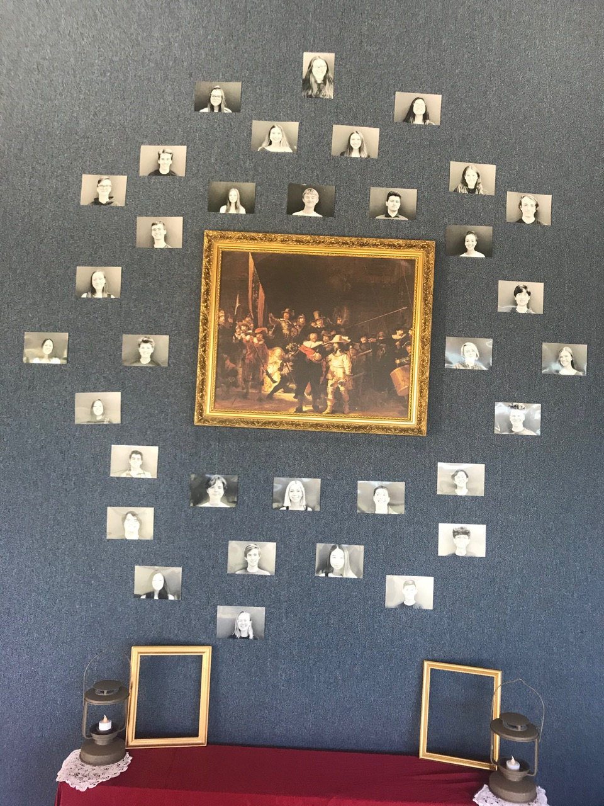
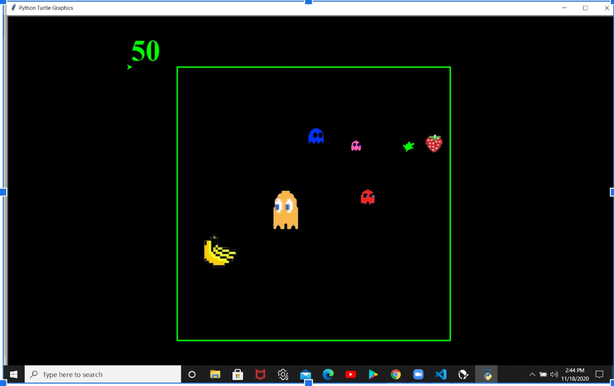
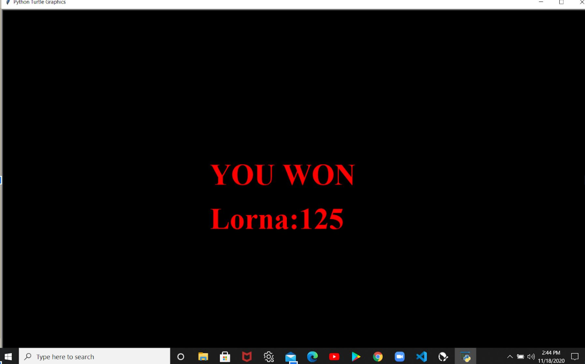

Home
Portfolio
About Me
This is my Portfolio Page!
I was a part of Advance Theater for a year.

The picture below the project my team and I created. The idea of this project is inspired by not polluting the oceans in order to save marine animals.

We made a very simple project but with very meaningful lesson. On the background, we chose a kind of blue that represents ocean, and we wanted others to feel relaxed.
Then we will have a fish moving from right to left, and then we will see a turtle eat a plastic waste which results in killing him.
In the end, we decided to write a text like a warning to warn people to stop throwing their wastes on oceans because we can save millions of marine animals by our actions.
The picture below is the second project that I created with my new team. Our game is an alternative version of pac-man.

As I mentioned earlier, our game was inspired by pac-man.
We tried to use the pac-man himself as the playable character, but we used a turtle instead so we can make it look interesting.
The whole point of the game is to collect all four fruits by avoiding any contacts with ghosts.
<
If you win the game, the screen will say "You Won". If a ghost touches you, then the screen will show "You Lost" with your name and score.